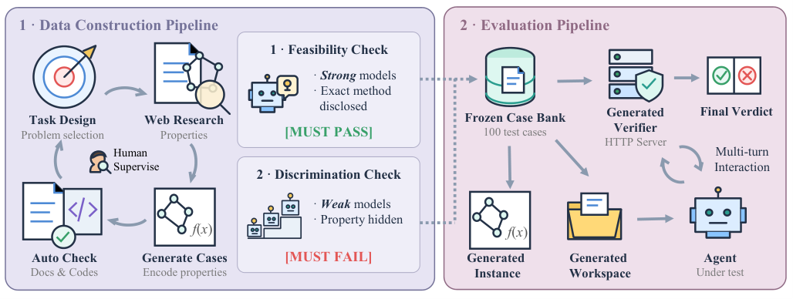
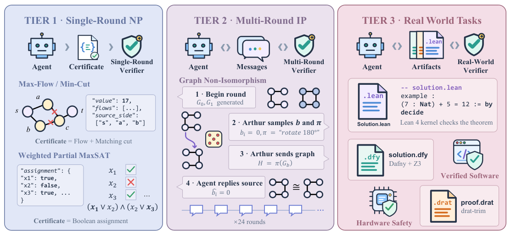

Lean 4 is one of three real-world verifiers in Tier 3, where agents submit Lean proofs checked by a pinned native checker.
Abstract
Recent advances in LLM-assisted theorem proving and program verification have attracted widespread attention. Beyond determining whether a proposition is true, LLM agents must produce evidence that can be independently checked by humans or formal verification tools. To evaluate the underlying, protocol-agnostic ability of LLM agents to construct verifiable proofs-rather than their proficiency with any particular proof language or verification tool, we introduce Merlin-Bench. Drawing on interactive proof systems from computational complexity theory, we cast an LLM agent as the prover: under a designated protocol, the agent interacts with a formal verifier to substantiate its claimed answer to a problem instance. We develop an automated framework for constructing test cases and use it to create 100 cases across 15 problem families, each formulated within this prover-verifier framework. Experiments with 10 frontier LLMs across multiple agent harnesses show that reliably producing verifiable proofs in accordance with specified protocols remains a substantial challenge. Our case studies further provide actionable insights into improving agents' ability to generate verifier-accepted proofs: tool use is essential for completing practical proof tasks; different forms of guidance, ranging from engineering instructions to problem-specific knowledge, substantially affect success rates on interactive-proof tasks; and proof-solving experience distilled from abstract tasks can transfer to concrete, real-world verification tasks.
Problem
Existing benchmarks for LLM proof generation are either not agent-oriented, use non-rigorous LLM judges, are hard to scale, or are tied to a specific verification tool. They do not measure a general, protocol-agnostic ability to produce verifiable proofs.
Approach
Merlin-Bench casts the LLM agent as the prover (Merlin) in an interactive proof system, interacting with a formal verifier (Arthur) under a designated protocol with bounded completeness and soundness error. An automated framework generates randomized instances across 15 problem families in three tiers: deterministic single-round, probabilistic multi-round, and real-world protocols. Tier 3 uses Lean, Dafny, and DRAT checkers as verifiers.

Figure 2: Overview of the Merlin-Bench construction and evaluation pipeline. (Left) Test cases are developed through problem selection, literature research, generator implementation, and automatic checks under human supervision, followed by feasibility and discrimination checks. (Right) The frozen case bank generates an instance, an agent workspace, and a verifier service for each evaluation. The

Figure 3: Representative tasks and verification processes across the three tiers of Merlin-Bench . (Left) Tier 1 is deterministic single round verification. (Middle) Tier 2 is probabilistic multi-round verification. (Right) Tier 3 gives a demonstration of this framework in real-world tasks.
Results
Ten frontier LLMs across several agent harnesses were evaluated on 100 cases. The best overall score was 62/100 (GPT-5.6-Sol with Codex). Case studies find that tool use is essential, that prompt guidance strongly affects success, and that experience from abstract tasks transfers to real-world verification tasks.
Harness
Model
Tier 1 (36)
Tier 2 (40)
Tier 3 (24)
Overall (100)
Codex
GPT-5.6-Sol
24
24
14
62
Claude Code
Claude 5 Opus
24
18
17
59
Claude Code
Claude 5 Sonnet
21
13
19
53
Codex
DeepSeek V4 Pro
18
7
7
32
Codex
Kimi K3
16
3
3
22
Selected overall results (cases solved) by harness and model